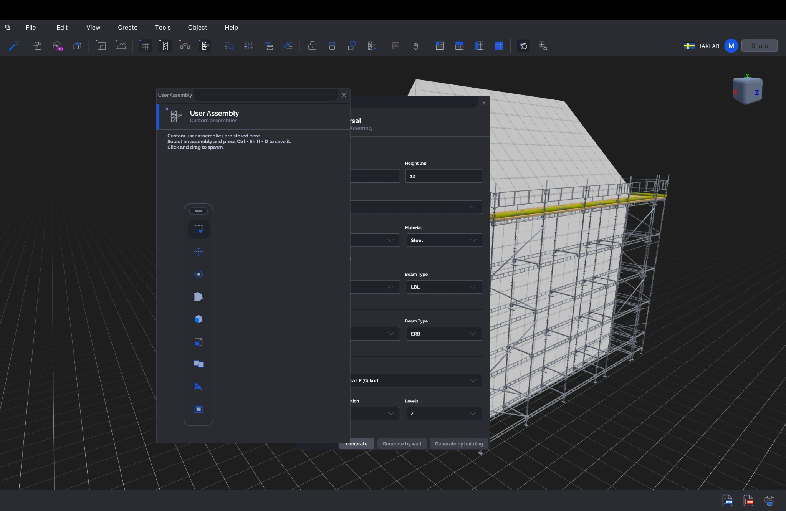
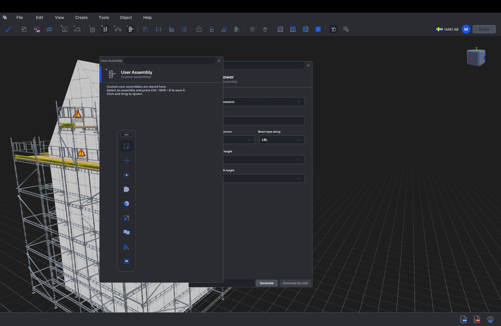
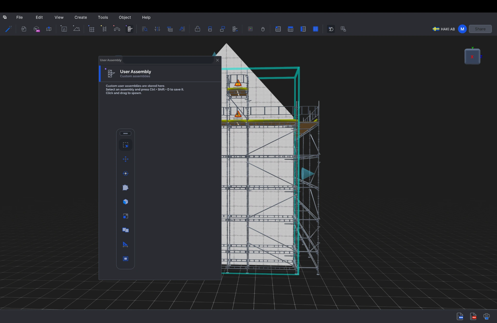
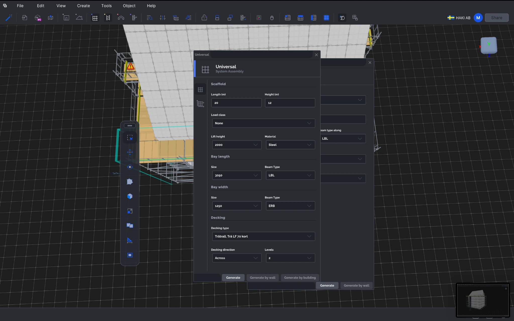
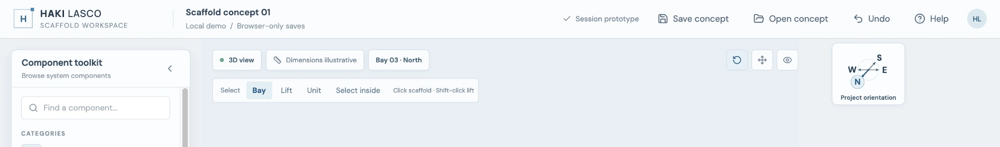
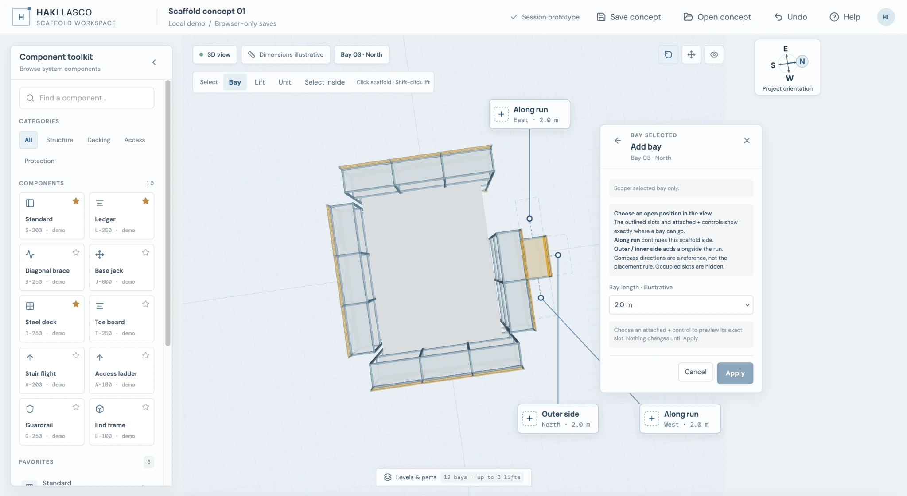
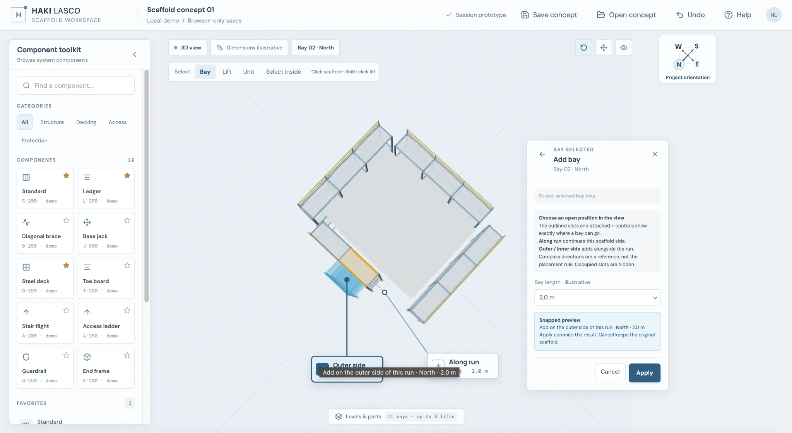
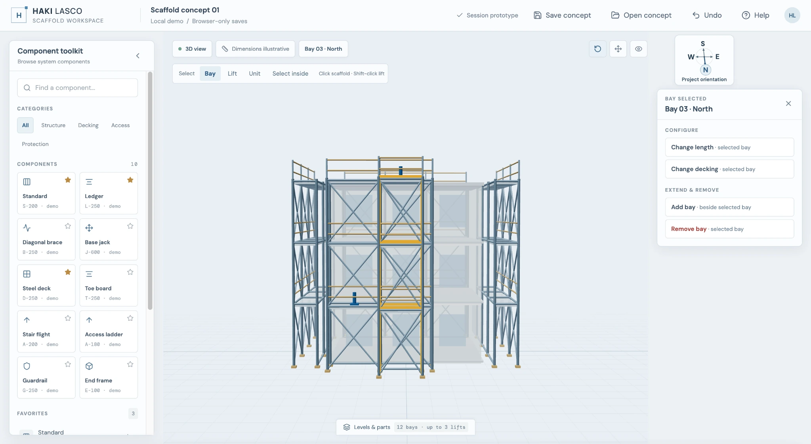
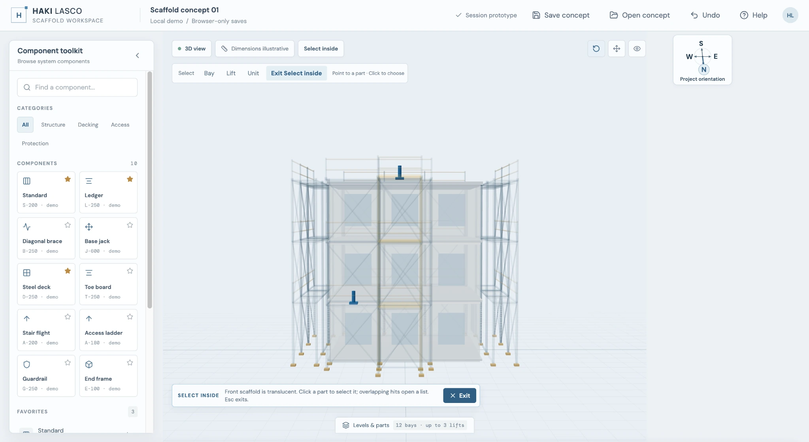
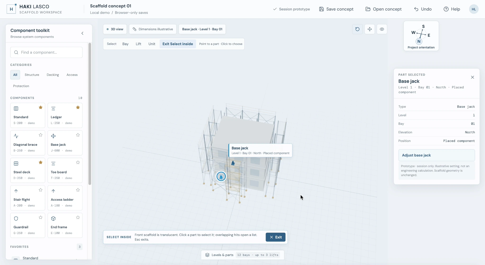

HAKI LASCO · UX CONCEPT PROTOTYPE
Making scaffold planning easier to see—and easier to act on.
An independent UX concept exploring improvements to LASCO, HAKI’s 3D scaffolding design program. The project focuses on contextual controls, bay placement, and selecting components within complex scaffold structures.
When controls compete with the scaffold.
Planning a scaffold means working with the structure and its details at the same time. But fixed panels can cover the area people need to inspect, while zooming out can make controls hard to use.
- Adding a bay needs to feel connected to the selected part of the scaffold.
- World directions such as North and East don’t always explain which neighboring slot will be filled.
- Reaching a component deep inside a dense scaffold can be difficult.
- Bay, Lift and Unit actions need to appear in the context of what the person is editing.




Start with the scaffold—not a wall of settings.
Feedback from a HAKI domain expert highlighted the value of controls that adapt as the user moves around the model. It also surfaced two challenges to explore: adding bays without obscuring the structure, and selecting parts deep inside it.

I organized the interactions around three scopes—Bay, Lift and Unit—so the available actions can respond to the part of the scaffold being edited.

Make placement and selection easier to understand.

Keep the scaffold in view.
Place contextual controls where they can be used without covering the area being inspected.
Show where a bay will go.
Let users choose an available neighboring slot on the scaffold and preview its exact position before applying the change.

Make orientation visible.
Use a compass to connect the 3D view to the project’s North, East, South and West directions.
Reach the details inside.
Explore a temporary “Select inside” mode to help users find an individual component, such as a base jack, within a dense structure.
Put the next decision beside the selected part.
The prototype uses contextual actions to keep the user’s attention on the scaffold. When adding a bay, the available neighboring positions are shown on the structure itself. A snapped preview makes the result visible before the user applies or cancels the change.
For dense areas, “Select inside” makes it easier to reveal and choose a hidden component, then see an action relevant to that selection.
Interaction details
- Choose an open neighboring slot beside the selected bay.
- Preview the exact placement before applying it.
- Rotate the view while keeping the compass as an orientation reference.
- Reveal and select a hidden base jack, then try an illustrative adjustment.


A working concept to react to.

The prototype turns feedback into interactions that can be explored directly in 3D. It gives stakeholders something concrete to discuss: how bay placement should work, how controls can stay clear of the scaffold, and how users might reach parts inside a dense structure.
An interactive UX concept for discussion and exploration; engineering validation was outside the scope.